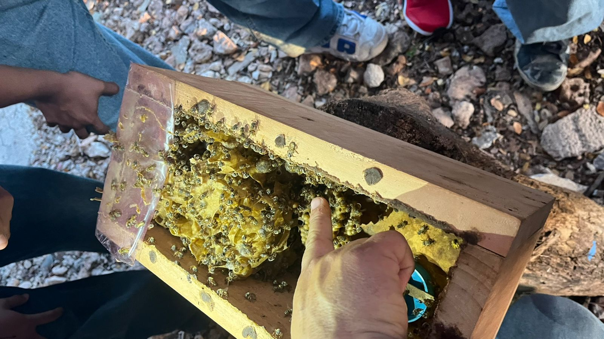

Descripción general
Las abejas meliponas son abejas sin aguijón que producen miel. Son de color café con franjas amarillas y tienen alas transparentes. Se caracterizan por ser dóciles y muy importantes para la naturaleza.

Historia
Han sido criadas desde hace más de mil años por los pueblos mayas. Practicaban la meliponicultura para obtener miel y otros productos.
Estas abejas eran muy importantes en la cultura maya, incluso tenían una deidad relacionada con ellas llamada Ah-Muzen-Cab.
Fisiología
Su cuerpo se divide en cabeza, tórax y abdomen. Utilizan sus antenas y boca para recolectar néctar, y sus alas para desplazarse.
A diferencia de otras abejas, no tienen aguijón funcional, por lo que se defienden de otras formas.
Importancia ecológica
Son fundamentales para la polinización de plantas y cultivos. Gracias a ellas, muchos ecosistemas pueden mantenerse en equilibrio.
Su miel también es muy valorada por sus propiedades medicinales.
Datos interesantes
- Existen más de 500 especies de abejas sin aguijón.
- Su miel es más líquida que la miel común.
- Producen poca miel, pero de gran calidad.
- Son esenciales para los ecosistemas.